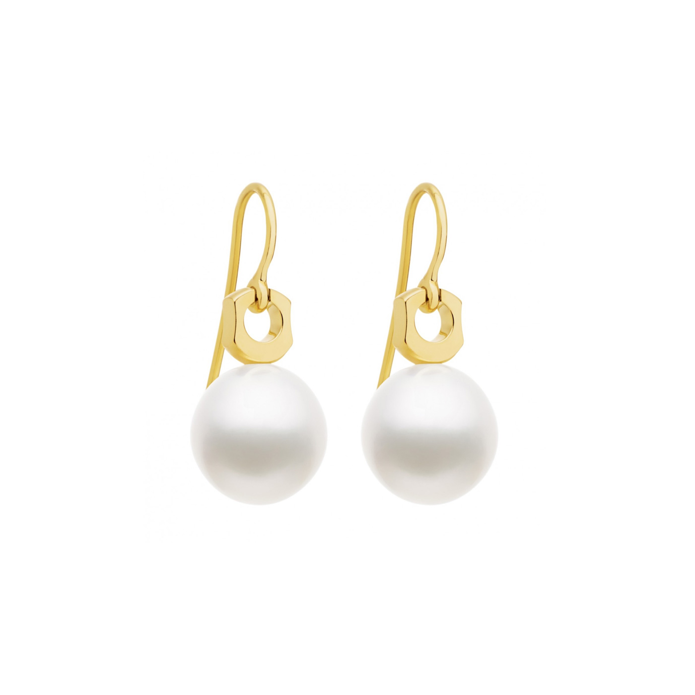

Pereiti prie turinio Confetissimo - moterų dienoraštis
Mada, stilius, grožis, santykiai, namai
Pagrindinis iHerb Keto dieta Keto skaičiuoklė Keto receptai Pusryčiai Pietūs Vakarienė Riebalų bombos Padažai ir padažai dietos Dėl svorio Dėl ligų Maistas ir vitaminai Vitaminai Mineralai Maitinimo komponentai Daržovės vaisiai Ягоды Mėsa Рыба Jūros gėrybės Grūdai Pupos Nafta Sūriai kiaušiniai riešutai Prieskoniai sėklos Miltų produktai Augalai ir žolelės Bičių produktai Delikatesai Padažai Desertai ir saldainiai Alkoholiniai gėrimai Mada ir stilius Su ką dėvėti Drabužių stilius Spalva drabužiuose Белье Avalynė Аксессуары Moteriškos figūros rūšys Grožis kūnas Plaukai ir šukuosena Makiažas Manikiūras ir pedikiūras parfumerija Namų tobulinimas Interjero dizainas Svetainės dizainas Virtuvės dizainas Miegamojo dizainas Vonios dizainas Мебель Užuolaidos apšvietimas Dekoro vestuvės Vestuvių mados Vaidinimas Taro Pagrindinis
Mauris vitae nisl nec metus placerat perdiet est. Phasellus dapibus semper urna. Pellentesque ornare, orci in consectetuer hendrerit, volutpat.
Pellenteque ornare

DIRBTINIS KAILIS | AUDINIŲ KATALOGAS | Audiniai internetu ... Kailis Moterų kailis "Fortune" Baltas kailis Rožinis kailis „Sursk paltai“ - modelių ir apžvalgų apžvalga Ką aš galiu dėvėti su trumpomis rankovėmis? Paltai iš Rusijos gamintojų Paltai parduotuvėje „Sniego karalienė“ Kailis Kailis su siuvinėjimu yra geriausias būdas parodyti individualumą.
Kailis | TEMA | 15min.lt Vientisas lapės kailis, per visą ilgi neprapjautas, skyle tik užpakalyje. Ilgis 1,30m. Nupjautos kojyčių galunės,
Moterų kailis - techinfus.com 2019 rudens-žiemos sezono tendencija yra kailis, pagamintas iš neįprastos medžiagos Rusijos gyventojams. Tai atrodo kaip avių vilna, bet daug minkštesnė, rafinuotesnė, kilnesnė. Kailis lamos ar, kitaip tariant, alpakos, užkariauja rinką ir jau kabo ne vienos fashionistos spintelėje. Kaip jį išsirinkti, kur ir už kiek pirkti, ką dėvėti ir prie ko derinti, ir kokia tai medžiaga?
Kailis - vertimai, sinonimai, gramatika, statistika ... Apsauginis-liepsnai atsparus modakrilo kailis naudojamas degalinių, naftos platformų darbuotojams. • ortopediniams gaminiams. • dažymo voleliams, dažymo pirštinėms • žirgų sportui Naudojama pledams , balnų paminkštinimui. • naminiams gyvūnams. Naudojama kilimėliams, pledams, gultams, drabužėliams
Kailis - išsamiai DELFI.lt Madingas kailis yra bet kurios moters svajonė. Ir šilta, ir gražu, ir prestižu. Plėtra Drabužių stilius. Kailiniai marškiniai iš Italijos. Kailiniai iš natūralaus kailio niekada neišeina iš mados, todėl daugelis užsiima jų kūrimu ...
Natūralaus avies kailio kilimėlis, 70x110 cm kaina | pigu.lt Kailis – iš plaukų sudarytas odos darinys. Žinduolio kailis iš nevienodų plaukų. Ilgesni ir storesni pigmentuoti plaukai vadinami akuotais. Žinduoliams akuotai svarbūs kaip paukščiams kontūrinės plunksnos. Gerokai gausiau negu akuotų yra švelnių vilnaplaukių. Jie trumpesni ir garbanoti.
Šilta Mada - Individalus Kailio Gaminių Siuvimas ir ... Jokio kito žinduolio kailis nėra toks tankus kaip jūrinės ūdros – 155 000 plaukų kvadratiniame centimetre. Ūdrai plaukiant jos kailyje prie pat odos susidaro oro tarpas. Jis tarsi izoliacinė medžiaga neleidžia šaltam vandeniui prasiskverbti iki kūno ir taip gyvūną sušaldyti.